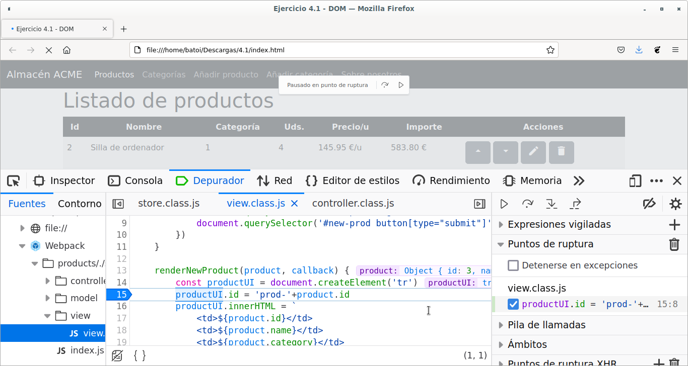

El lenguaje Javascript¶
En este primer bloque vamos a conocer el lenguaje Javascript. El bloque se divide en:
- Introducción a Javascript
- 1-Sintaxis: Variables. Funciones. Estructuras y bucles. Tipos de datos. Buenas prácticas
- 2.1-Objetos: Introducción a los objetos en Javascript
- 2.2-Arrays: Métodos. Functional Programming. Referencia vs copia. Rest y Spread. Desestructuración de arrays. Map. Set
- 3-Programación Orientada a Objetos: Introducción. Clases. POO en JS5
- 3.1-vite: Cómo usar vite
- 3.1-webpack: Cómo usar webpack
- 4-Document Object Model - DOM: Acceso a nodos. Acceso desde otros nodos. Manipular el árbol DOM. Atributos de los nodos
- 4.1-MVC: Cómo usaremos el patrón MVC para crear la UI de nuestra aplicación
- 5-Browser Object Model - BOM: Timers. Objetos del BOM (window, location, history, otros objetos)
- 6-Eventos: Escuchadores. Tipos de eventos. Los objetos this y event. Propagación de eventos (bubbling)
- 7-Objetos nativos: Funciones globales. Objetos nativos del lenguaje: Math, Date, RegExp, ...
- 8-Validación de formularios: Validación de formularios. La API de validación de formularios. Expresiones regulares
- 9-Ajax. Promesas. SPA
- 10-APIs HTML5: Drag and drop. API Storage. Geolocalización. API de Google Maps
- 11-Más cosas a aprender...: WebComponents. WebSockets. WebWorkers. Typescript.
- 12-Tests: Testear JS con Jest
Introducción a Javascript¶
- El lenguaje Javascript
- Introducción a Javascript
- Introducción
- Herramientas
- Incluir javascript en una página web
- Mostrar información
- Bibliografía
Introducción¶
En las páginas web el elemento fundamental es el fichero HTML con la información a mostrar en el navegador. Posteriormente surgió la posibilidad de "decorar" esa información para mejorar su apariencia, lo que dio lugar al CSS. Y también se pensó en dar dinamismo a las páginas y apareció el lenguaje Javascript.
En un primer momento las 3 cosas estaban mezcladas en el fichero HTML pero eso complicaba bastante el poder leer esa página a la hora de mantenerla por lo que se pensó en separar los 3 elementos básicos:
- HTML: se encarga de estructurar la página y proporciona su información, pero es una información estática.
- CSS: es lo que da forma a dicha información, permite mejorar su apariencia, permite que se adapte a distintos dispositivos, etc.
- Javascript: es el que da vida a un sitio web y le permite reaccionar a las acciones del usuario.
Por tanto nuestras aplicaciones tendrán estos 3 elementos y lo recomendable es que estén separados en distintos ficheros:
- El HTML lo tendremos habitualmente en un fichero
index.html, normalmente en una carpeta llamadapublic - El CSS lo tendremos en uno o más ficheros con extensión
.cssdentro de una carpeta llamadastyles - EL JS estará en ficheros con extensión
.jsen un directorio llamadoscripts
Las características principales de Javascript son:
- es un lenguaje interpretado, no compilado
- se ejecuta en el lado cliente (en un navegador web), aunque hay implementaciones como NodeJS para el lado servidor
- es un lenguaje orientado a objetos (podemos crear e isntanciar objetos y usar objetos predefinidos del lenguaje) pero basado en prototipos (por debajo un objeto es un prototipo y nosotros podemos crear objetos sin instanciarlos, haciendo copias del prototipo)
- se trata de un lenguaje débilmente tipado, con tipificación dinámica (no se indica el tipo de datos de una variable al declararla e incluso puede cambiarse)
Ejemplos de uso:
- Cambiar el contenido de la página
- Cambiar los atributos de un elemento
- Cambiar la apariencia de algo
- Validar datos de formularios
- ...
Sin embargo, por razones de seguridad, Javascript no nos permite hacer cosas como:
- Acceder al sistema de ficheros del cliente
- Capturar datos de un servidor (puede pedirlo y el servidor se los servirá, o no)
- Modificar las preferencias del navegador
- Enviar e-mails de forma invisible o crear ventanas sin que el usuario lo vea
- ...
Un poco de historia¶
Javascript es una implementación del lenguaje ECMAScript (el estándar que define sus características). El lenguaje surgió en 1997 y todos los navegadores a partir de 2012 soportan al menos la versión ES5.1 completamente. En 2015 se lanzó la 6ª versión, inicialmente llamada ES6 y posteriormente renombrada como ES2015, que introdujo importantes mejoras en el lenguaje y que es la versión que usaremos nosotros. Desde entonces van saliendo nuevas versiones cada año que introducen cambios pequeños. La última es la ES2018 aprobada en Junio de 2018.
Las principales mejoras que introdujo ES2015 son: clases de objetos, let, for..of, Map, Set, Arrow functions, Promesas, spread, destructuring, ...
Soporte en los navegadores¶
Los navegadores no se adaptan inmediatamente a las nuevas versiones de Javascript por lo que puede ser un problema usar una versión muy moderna ya que puede haber partes de los programas que no funcionen en los navegadores de muchos usuarios. En la página de Kangax podemos ver la compatibilidad de los diferentes navegadores con las distintas versiones de Javascript. También podemos usar CanIUse para buscar la compatibilidad de un elemento concreto de Javascript así como de HTML5 o CSS3.
Si queremos asegurar la máxima compatibilidad debemos usar la versión ES5 (pero nos perdemos muchas mejoras del lenguaje) o mejor, usar la ES6 (o posterior) y después transpilar nuestro código a la version ES5. De esto se ocupan los transpiladores (Babeljs es el más conocido) por lo que no suponen un esfuerzo extra para el programador.
Herramientas¶
La consola del navegador¶
Es la herramienta que más nos va a ayudar a la hora de depurar nuestro código. Abrimos las herramientas para el desarrollador (en Chrome y Firefox pulsando la tecla F12) y vamos a la pestaña Consola:

Allí vemos mensajes del navegador como errores y advertencias que genera el código y todos los mensajes que pongamos en el código para ayudarnos a depurarlo (cusando los comandos console.log y console.error).
Además en ella podemos escribir instrucciones Javascript que se ejecutarán mostrando su resultado. También la usaremos para mostrar el valor de nuestras variables y para probar código que, una vez que funcione correctamente, lo copiaremos a nuestro programa.
EJERCICIO:
abre la consola y prueba las funciones alert, confirm y prompt.
Siempre depuraremos los programas desde aquí (ponemos puntos de interrupción, vemos el valor de las variables, ...).

Es fundamental dedicar tiempo a saber utilizar la consola porque nos facilitará enormemente la tarea de depurar nuestro código. Podéis encontrar infinidad de páginas en internet donde nos explican en profundidad el uso de la consola, como Debugging en el navegador.
Editores¶
Podemos usar el que más nos guste, desde editores tan simples como NotePad++ hasta complejos IDEs. La mayoría soportan las últimas versiones de la sintaxis de Javascript (Netbeans, Eclipse, Visual Studio, Sublime, Atom, Kate, Notepad++, ...). Nosotros vamos a utilizar Visual Studio Code por su sencillez y por los plugins que incorpora para hacer más cómodo mi trabajo. En Visual Studio Code se instalará algún plugin como:
- SonarLint: es más que un linter y me informa de todo tipo de errores pero también del código que no cumple las recomendaciones (incluye gran número de reglas). Marca el código mientras lo escribimos y además podemos ver todas las advertencias en el panel de Problemas (Ctrl+Shift+M)
- Live Server: para abrir la web en un navegador y ver los cambios en vivo.
Editores on-line¶
Son muy útiles porque permiten ver el código y el resultado a la vez. Normalmente tienen varias pestañas o secciones de la página donde poner el código HTML, CSS y Javascript y ver su resultado.
Algunos de los más conocidos son Codesandbox, Fiddle, Plunker, CodePen, etc. aunque hay muchos más.
Ejemplo de 'Hello World' en Fiddle:
Ejemplo de 'Hello World' en CodePen:
See the Pen Hello World Codepen by Kevin Schweickhardt (@kscatcensus) on CodePen.
Incluir javascript en una página web¶
El código Javascript va entre etiquetas <script>. Puede ponerse en el <head> o en el <body>. Funciona como cualquier otra etiqueta y el navegador la interpreta cuando llega a ella (va leyendo y ejecutando el fichero línea a línea). Podéis ver en este vídeo un ejemplo muy simple de cómo se ejecuta el código en el HEAD y en el BODY.
Lo mejor en cuanto a rendimiento es ponerla al final del <body> para que no se detenga el renderizado de la página mientras se descarga y se ejecuta el código. También podemos ponerlo en el <head> pero usando los atributos async y/o defer (en Internet encontraréis mucha información sobre esta cuestión, por ejemplo aquí).
Como se ve en el primer vídeo, es posible poner el código directamente entre la etiqueta <script> y su etiqueta de finalización pero lo correcto es que esté en un fichero externo (con extensión .js) que cargamos mediante el atributo src de la etiqueta. Así conseguimos que la página HTML cargue más rápido (si lo ponemos al final del BODY o usamos async) y además no mezclar HTML y JS en el mismo fichero, lo mejora la legibilidad del código y facilita su mantenimento:
Mostrar información¶
Javascript permite mostrar al usuario ventanas modales para pedirle o mostrarle información. Las funciones que lo hacen son:
window.alert(mensaje): Muestra en una ventana modalmensajecon un botón deAceptarpara cerra la ventana.window.confirm(mensaje): Muestra en una ventana modalmensajecon botones deAceptaryCancelar. La función devuelve true o false en función del botón pulsado por el usuario.window.prompt(mensaje [, valor predeterminado]): Muestra en una ventana modalmensajey debajo tiene un campo donde el usuario puede escribir, junto con botones deAceptaryCancelar. La función devuelve el valor introducido por el usuario como texto (es decir que si introduce 54 lo que se obtiene es "54") o false si el usuario pulsa Cancelar.
También se pueden escribir las funciones sin window. (es decir alert('Hola') en vez de window.alert('Hola')) ya que en Javascript todos los métodos y propiedades de los que no se indica de qué objeto son se ejecutan en el objeto window.
Si queremos mostrar una información para depurar nuestro código no utilizaremos alert(mensaje) sino console.log(mensaje) o console.error(mensaje). Estas funciones muestran la información pero en la consola del navegador. La diferencia es que console.error la muestra como si fuera un error de Javascript.
git¶
Usaremos repositorios git para la entrega de las prácticas y servirá también para poder realizar el control de versiones. Para instalarlo simplemente habrá que instalar el paquete git (apt install git).
Podemos gestionar git desde la consola o quien quiera puede instalar una extensión para utilizarlo desde el entorno de programación. En el caso de Visual Studio Code lo encontramos en https://code.visualstudio.com/docs/editor/versioncontrol.
npm¶
npm es el gestor de paquetes del framework Javascript Node.js y suele utilizarse en programación frontend como gestor de dependencias de la aplicación. Esto significa que será la herramienta que se encargará de descargar y poner a disposición de nuestra aplicación todas las librerías Javascript que vayamos a utilizar, por ejemplo para hacer los tests de nuestros programas (en algunas prácticas haremos o pasaremos tests unitarios ya hechos para comprobar que nuestros programas funcionan correctamente y, sobre todo, que continúan haciéndolo tras realizar alguna modificación en ellos).
Para instalar npm tenemos que instalar NodeJS. Podemos instalarlo desde los repositorios como cualquier otro programa (apt install nodejs), pero posiblemente nos instalará una versión poco actualizada por lo que es mejor instalarlo desde NodeSource siguiendo las instrucciones que allí se indican, que básicamente son ejecutar:
(cambiaremos X.y por la versión que queramos, normalmente la última versión estable).
También podemos descargarlo directamente desde NodeJS.org, descomprimir el paquete e instalarlo (dpkg -i _nombre_del_paquete_).
Con eso ya tendremos npm en nuestro equipo. Podemos comprovar la versión que tenemos con:
Bibliografía¶
- Curso "Programación con JavaScript". CEFIRE Xest. Arturo Bernal Mayordomo
- Curso de JavaScript y TypeScript de Arturo Bernal en Youtube
- MDN Web Docs. Moz://a. https://developer.mozilla.org/es/docs/Web/JavaScript
- Introducción a JavaScript. Librosweb. http://librosweb.es/libro/javascript/
- Curso de Javascript (Desarrollo web en entorno cliente). Ada Lovecode - Didacticode (90 vídeos) de Laura Folgado
- Apuntes Desarrollo Web en Entorno Cliente (DWEC). Sergi García Barea